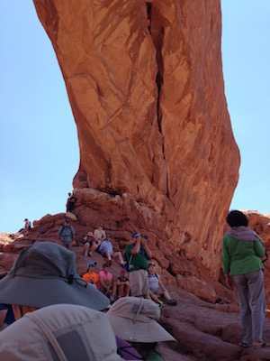

- DAY 5 -
Easily one of my favorite days of the trip. This was our first time coming out to Arches National Park, and it was amazing! Driving through the park we saw several monuments, including the Balanced Rock, Parade of the Elephants, and the Windows. We hiked up to the North Window, and from their, we could see the South Window as well as the Turret Arch. The sun was turning up the temperature though, so always remember to bring your water supply and pace yourself!
